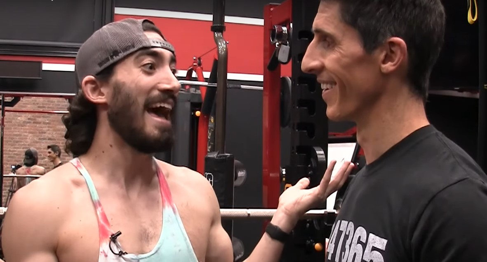

The First Encounter
According to The Scriptures, the tale of Jeff and Jesse began when Jesse left a comment on Jeff's first video, thus gaining Jeff's attention. As you probably already know, there is irrefutable evidence of Jesse and Jeff being the same person, since Jesse came from the future. That's why it's no coincidence that Jesse and Jeff got together so early - Jesse knew exactly when Jeff was gonna upload The Video and when to make The First Contact.
Jesse's Iconic Beard
One of the first tales in The Scriptures was about Jesse's beard... Jesse was ever since his birth unable to grow a single hair on his chin. However, one day Jeff touched Jesse's face and suddenly, The Beard was born - This day is celebrated every year because that was the moment when Jeff first showed his powers to the world.
The First Brawl
Things, however, weren't always perfect. Legends tell us of a day when Non-Athleats decided to ruin our athletic paradise on Earth. They came up with a plan and started poisoning Jeff's mind with non-athletic thoughts. Jeff was thus temporarily in a state of psychosis and couldn't recognize his brother Jesse. This resulted in The First Brother's War.

It was during this time that Jeff lost control and gave his power away to The Monster. Nobody (except Jeff of course) knows the nature and origins of The Monster. All we know is that it is the most destructive force in the universe that constantly wages war with Jeff over the control of his athletic body. And this was the first and only time (so far...) that Jeff was losing that war.
Nobody knows for sure how exacty The War was resolved. There are countless theories, the most prominent being that of Jesse doing face-pulls, which immediately convinced Jeff that Jesse was a true athleat and his friend. Jesse then helped Jeff get his control again and The Monster was under Jeff's command once again. Nonetheless, The Monster still lurks inside of Jeff and is ready to be unleashed upon the souls of both Athleats and Non-Athleats. However, The War fortunately ended and Jeff and Jesse once again became The Dynamic Duo we all know and love.

What else is there?
Our heroes went through all kinds of adventures - if you can think of an exciting thing, Jeff and Jesse probably did it. There are thousands of folk stories told verbaly and passed from generation to generation - Such as the tale of Jeff being turned into a dog...
 ¨
¨
Or the legend of Jeff having to eat a 50 pound gummy bear in order to save humanity:
And I also can't not mention the time Jeff started a revolution
Where are our Heroes today?
Jeff and Jesse keep working and preaching their wise words through their YouTube platform. Jeff is still a 100% natural and, as always, lifts absolutely real weights. Their bodies are still athletic and athletes all over the world are joing their cause. The total mass of rotator cuffs over the world is increasing annualy and by now we can only imagine how massive they all are when put together. And the world thankfully still spins, thanks to Jeff who doesn't give up on non-athleats and lifts our sins every single day.

I would love to end my work on the happiest note imaginable: with a picture of our two superheroes being the happiest and cutest couple we could ever dream of.

If you'd like to see more, feel free to click the links below ti visit my other websitse regarding Jeff and Jesse... Until then, stay athletic and don't forget to train your rotator cuffs
General overview
Legends of Jeff and Jesse
Online Scriptures